Deep Learning with PyTorch -- Part 2 Learning from images (C9-C10)
Early detection of lung cancer
We’ll take a single use case and explore it in depth over the course of several chapters, starting with the basic building blocks we learned in part 1, and building out a more complete project than we’ve seen so far. In order to train the models we’ll develop in part 2, you will need access to a GPU with at least 8 GB of RAM as well as several hundred gigabytes of free disk space to store the training data.
- Chapter 9 introduces the project, environment, and data we will consume and the structure of the project we’ll implement.
- Chapter 10 shows how we can turn our data into a PyTorch dataset
- chapters 11 and 12 introduce our classification model: the metrics we need to gauge how well the dataset is training, and implement solutions to problems preventing the model from training well.
- In chapter 13, we’ll shift gears to the beginning of the end-to-end project by creating a segmentation model that produces a heatmap rather than a single classifica- tion. That heatmap will be used to generate locations to classify.
- in chapter 14, we’ll combine our segmentation and classification models to perform a final diagnosis.
Chapter 9 Using PyTorch to fight cancer
- Breaking a large problem into smaller, easier ones
- Exploring the constraints of an intricate deep learning problem, and deciding on a structure and approach
- Downloading the training data
We’ll start by covering the overall plan for part 2 of the book so that we have a solid idea of the larger scope the following individual chapters will be building toward.
9.1 Introduction to the use case
Our goal for this part of the book is to give you the tools to deal with situations where things aren’t working, which is a far more common state of affairs than part 1 might have led you to believe. We can’t predict every failure case or cover every debugging technique, but hopefully we’ll give you enough to not feel stuck when you encounter a new roadblock.
In order to present these ideas and techniques, we need a context with some nuance and a fair bit of heft to it. We’ve chosen automatic detection of malignant tumors in the lungs using only a CT scan of a patient’s chest as input. We’ll be focusing on the technical challenges rather than the human impact, but make no mistake—even from just an engineering perspective, part 2 will require a more serious, structured approach than we needed in part 1 in order to have the project succeed.
our project in this part of the book will take three-dimensional CT scans of human torsos as input and produce as output the location of suspected malignant tumors, if any exist.
This part of the book will remain focused on the problem of detecting lung tumors, but the skills we’ll teach are general. Learning how to investigate, preprocess, and present your data for training is important no matter what project you’re working on.
NOTE While the end result of part 2 will work, the output will not be accurate enough to use clinically. We’re focusing on using this as a motivating example for teaching PyTorch, not on employing every last trick to solve the problem.
9.2 Preparing for a large-scale project
This project will build off of the foundational skills learned in part 1. We will use 3D data as input to our model, however. This is conceptually similar to the 2D image data used in the last few chapters of part 1, but we will not be able to rely on all of the 2D-specific tools available in the PyTorch ecosystem.
The main differences between the work we did with convolutional models in chapter 8 and what we’ll do in part 2 are related to how much effort we put into things outside the model itself. this will not end up being a case where we convert the CT to a tensor, feed it into a neural network, and have the answer pop out the other side. As is common for real-world use cases such as this, a workable approach will be more complicated to account for confounding factors such as limited data availability, finite computational resources, and limitations on our ability to design effective models.
Trying to train the models we will build on CPU could take weeks!1 If you don’t have a GPU handy, we provide pretrained models in chapter 14; Colaboratory (https://colab.research.google.com) provides free GPU instances that might be of use. PyTorch even comes preinstalled! You will also need to have at least 220 GB of free disk space to store the raw training data, cached data, and trained models.
Before we get into the details of how we’ll break down our problem, we need to learn some details about the medical domain.
9.3 What is a CT scan, exactly?
We will be using data from CT scans extensively as the main data format for our project, so having a working understanding of the data format’s strengths, weak- nesses, and fundamental nature will be crucial to utilizing it well.
The key point we noted earlier is this: CT scans are essentially 3D X-rays, represented as a 3D array of single-channel data.
Voxel A voxel is the 3D equivalent to the familiar two-dimensional pixel. It encloses a vol- ume of space (hence, “volumetric pixel”), rather than an area, and is typically arranged in a 3D grid to represent a field of data. Each of those dimensions will have a measurable distance associated with it. Often, voxels are cubic, but for this chap- ter, we will be dealing with voxels that are rectangular prisms.
In addition to medical data, we can see similar voxel data in fluid simulations, 3D scene reconstructions from 2D images, light detection and ranging (LIDAR) data for self-driving cars, and many other problem spaces. while the APIs that we’re going to cover here apply generally, we must also be aware of the nature of the data we’re using with those APIs if we want to be effective.
Each voxel of a CT scan has a numeric value that roughly corresponds to the average mass density of the matter contained inside. Most visualizations of that data show high-density material like bones and metal implants as white, low-density air and lung tissue as black, and fat and tissue as various shades of gray. Again, this ends up looking somewhat similar to an X-ray, with some key differences.
The primary difference between CT scans and X-rays is that whereas an X-ray is a projection of 3D intensity (in this case, tissue and bone density) onto a 2D plane, a CT scan retains the third dimension of the data. This allows us to render the data in a vari- ety of ways: for example, as a grayscale solid, which we can see in figure 9.1.
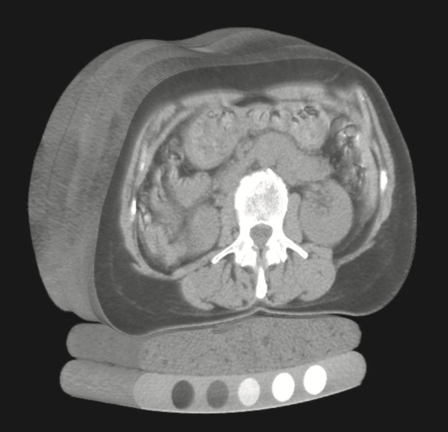
This 3D representation also allows us to “see inside” the subject by hiding tissue types we are not interested in. For example, we can render the data in 3D and restrict visibility to only bone and lung tissue, as in figure 9.2.
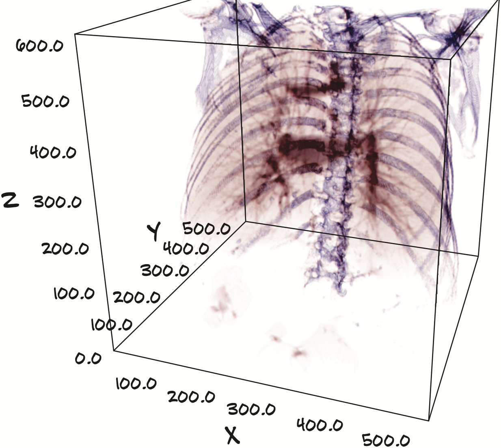
CT scans are much more difficult to acquire than X-rays, because doing so requires a machine like the one shown in figure 9.3 that typically costs upward of a million dollars new and requires trained staff to operate it. combined with patient privacy regulations, can make it somewhat difficult to get CT scans unless someone has already done the work of gathering and organizing a collection of them.
A final difference between a CT scan and an X-ray is that the data is a digital-only format. CT stands for computed tomography. The raw output of the scanning process doesn’t look particularly meaningful to the human eye and must be properly reinterpreted by a computer into something we can understand.
9.4 The project: An end-to-end detector for lung cancer
Most of the bytes on disk will be devoted to storing the CT scans’ 3D arrays containing density information, and our models will primarily consume various subslices of those 3D arrays. We’re going to use five main steps to go from examining a whole-chest CT scan to giving the patient a lung cancer diagnosis.
Our full, end-to-end solution shown in figure 9.4 will load CT data files to produce a Ct instance that contains the full 3D scan, combine that with a module that performs segmentation (flagging voxels of interest), and then group the interesting voxels into small lumps in the search for candidate nodules.
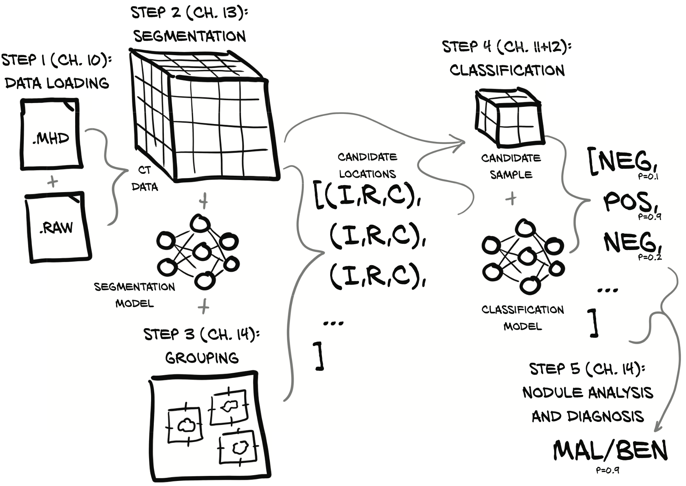
Nodules
A mass of tissue made of proliferating cells in the lung is a tumor. A tumor can be benign or it can be malignant, in which case it is also referred to as cancer. A small tumor in the lung (just a few millimeters wide) is called a nodule. About 40% of lung nodules turn out to be malignant—small cancers.
Last, each of those individual, per-nodule classifications can then be combined into a whole-patient diagnosis. In more detail, we will do the following:
- Load our raw CT scan data into a form that we can use with PyTorch. The process is somewhat less complicated with 2D image data and simpler still with non-image data.
- Identify the voxels of potential tumors in the lungs using PyTorch to implement a technique known as segmentation. This is roughly akin to producing a heatmap of areas that should be fed into our classifier in step 3.
- Group interesting voxels into lumps: that is, candidate nodules (see figure 9.5 for more information on nodules). Here, we will find the rough center of each hotspot on our heatmap. Each nodule can be located by the index, row, and column of its center point. Grouping voxels will not involve PyTorch directly, which is why we’ve pulled this out into a separate step.
- Classify candidate nodules as actual nodules or non-nodules using 3D convolution. The features that determine the nature of a tumor from a candidate structure are local to the tumor in question, so this approach should provide a good balance between limiting input data size and excluding relevant information.
- Diagnose the patient using the combined per-nodule classifications. we will attempt to deter- mine whether the nodule is benign or malignant based on imaging data alone.
Figure 9.4 only depicts the final path through the system once we’ve built and trained all of the requisite models. The actual work required to train the relevant models will be detailed as we get closer to implementing each step.
On the shoulders of giants
We are standing on the shoulders of giants when deciding on this five-step approach. We’ll discuss these giants and their work more in chapter 14.
We will first work on step 1 (data loading), and then jump to step 4 before we come back and implement steps 2 and 3, since step 4 (classification) requires an approach similar to what we used in chapter 8, using multiple convolutional and pooling layers to aggregate spatial information before feeding it into a linear classifier.
9.4.1 Why can’t we just throw data at a neural network until it works?
It’s a hard task to automate, and people haven’t fully figured it out yet. That difficulty translates to complexity; once we as a society have solved this problem definitively, there will probably be an off-the-shelf library package we can grab to have it Just Work, but we’re not there just yet.
Why so difficult, though?
- the majority of a CT scan is fundamentally uninteresting with regard to answering the question, “Does this patient have a malignant tumor?” This makes intuitive sense, since the vast majority of the patient’s body will consist of healthy cells.
- In the cases where there is a malignant tumor, up to 99.9999% of the voxels in the CT still won’t be cancer.
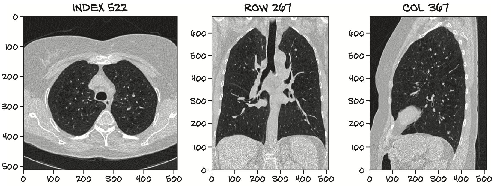
The project architecture we will use has the benefit of working well with a more modest amount of data. So while it’s certainly theoretically possible to just throw an arbitrarily large amount of data at a neural network until it learns the specifics of the proverbial lost needle, as well as how to ignore the hay, it’s going to be practically prohibitive to collect enough data and wait for a long enough time to train the network properly.
To come up with the best solution, we could investigate proven model designs that can better integrate data in an end-to-end manner. For example, Retina U-Net (https://arxiv.org/pdf/1811.08661.pdf) and FishNet (http://mng.bz/K240). These complicated designs are capable of producing high-quality results, but they’re not the best because understanding the design decisions behind them requires having mastered fundamental concepts first. That makes these advanced models poor candidates to use while teaching those same fundamentals!
Our approach for solving the problem won’t use end-to-end gradient backpropagation to directly optimize for our end goal. Instead, we’ll optimize discrete chunks of the problem individually, since our segmentation model and classification model won’t be trained in tandem with each other. That might limit the top-end effectiveness of our solution, but we feel that this will make for a much better learning experience.
We feel that being able to focus on a single step at a time allows us to zoom in and concentrate on the smaller number of new skills we’re learning. Each of our two models will be focused on performing exactly one task. Our segmentation model is forced to consume the entire image, but we will structure things so that our classification model gets a zoomed-in view of the areas of interest.
Step 3 (grouping) will produce and step 4 (classification) will consume data similar to the image in figure 9.6 containing sequential transverse slices of a tumor. This image is a close-up view of a (potentially malignant, or at least indeterminate) tumor, and it is what we’re going to train the step 4 model to identify, and the step 5 model to classify as either benign or malignant.
NOTE Standard rendering of CTs places the superior at the top of the image (basically, the head goes up), but CTs order their slices such that the first slice is the inferior (toward the feet). So, Matplotlib renders the images upside down unless we take care to flip them. Since that flip doesn’t really matter to our model, we won’t complicate the code paths between our raw data and the model, but we will add a flip to our rendering code to get the images rightside up.
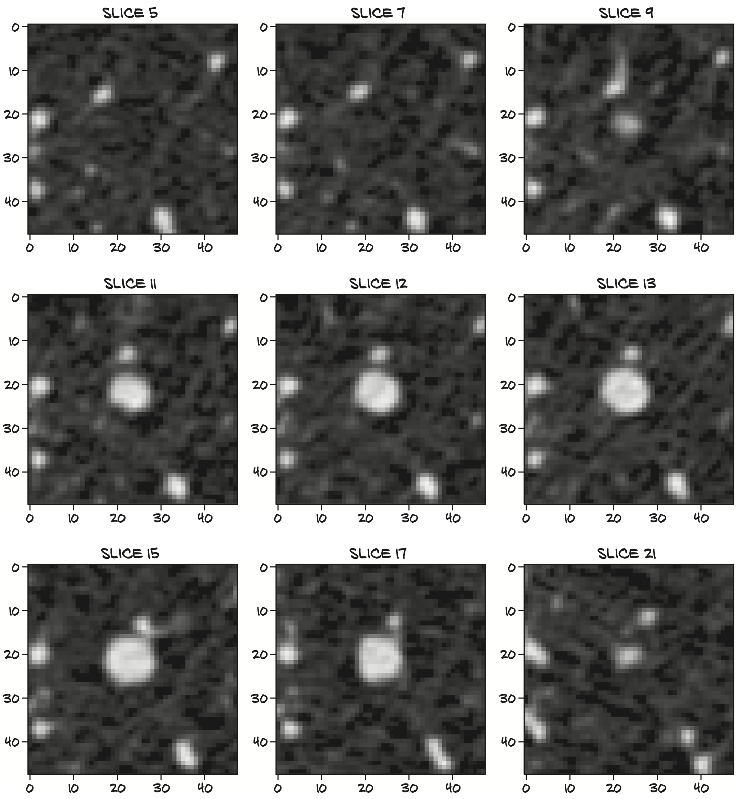
9.4.2 What is a nodule?
a nodule is any of the myriad lumps and bumps that might appear inside someone’s lungs. The precise definition limits the size of a nodule to 3 cm or less, with a larger lump being a lung mass; but we’re going to use nodule interchangeably for all such anatomical structures, since it’s a somewhat arbitrary cutoff and we’re going to deal with lumps on both sides of 3 cm using the same code paths. A nodule—a small mass in the lung—can turn out to be benign or a malignant tumor (also referred to as cancer)
The key part is this: the cancers that we are trying to detect will always be nodules, either suspended in the very non-dense tissue of the lung or attached to the lung wall. That means we can limit our classifier to only nodules, rather than have it examine all tissue. Being able to restrict the scope of expected inputs will help our classifier learn the task at hand.
In figure 9.8, we can see a stereotypical example of a malignant nodule. The smallest nodules we’ll be concerned with are only a few millimeters across, though the one in figure 9.8 is larger.
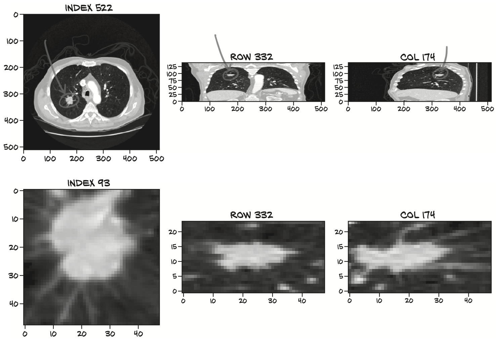
9.4.3 Our data source: The LUNA Grand Challenge
The CT scans we were just looking at come from the LUNA (LUng Nodule Analysis) Grand Challenge. The LUNA Grand Challenge is the combination of an open dataset with high-quality labels of patient CT scans (many with lung nodules) and a public ranking of classifiers against the data. The goal of the LUNA Grand Challenge is to encourage improvements in nodule detection by making it easy for teams to compete for high positions on the leader board.
NOTE Many CT scans “in the wild” are incredibly messy, in terms of idiosyncrasies between various scanners and processing programs. For example, some scanners indicate areas of the CT scan that are outside of the scanner’s field of view by setting the density of those voxels to something negative. CT scans can also be acquired with a variety of settings on the CT scanner, which can change the resulting image in ways ranging from subtly to wildly different. Although the LUNA data is generally clean, be sure to check your assumptions if you incorporate other data sources.
We will be using the LUNA 2016 dataset. The LUNA site describes two tracks for the challenge:
- the first track, “Nodule detection (NDET),” roughly corresponds to our step 1 (segmentation);
- the second track, “False positive reduction (FPRED),” is similar to our step 3 (classification). When the site discusses “locations of possible nodules,” it is talking about a process similar to what we’ll cover in chapter 13.
9.4.4 Downloading the LUNA data
It’s about 60 GB of data compressed, so depending on your internet connection, it might take a while to download. Once uncompressed, it takes up about 120 GB of space; and we’ll need another 100 GB or so of cache space to store smaller chunks of data so that we can access it more quickly than reading in the whole CT.
Navigate to https://luna16.grand-challenge.org/download and either register using email or use the Google OAuth login. Once logged in, you should see two download links to Zenodo data, as well as a link to Academic Torrents. The data should be the same from either.
The data we will be using comes in 10 subsets, aptly named subset0 through subset9. Unzip each of them so you have separate subdirectories like code/data-unversioned/ part2/luna/subset0, and so on. In addition, you need the candidates.csv and annotations.csv files. We’ve included these files on the book’s website and in the GitHub repository for convenience, so they should already be present in code/data/part2/luna/*.csv. They can also be downloaded from the same location as the data subsets.
NOTE If you do not have easy access to ~220 GB of free disk space, it’s possible to run the examples using only 1 or 2 of the 10 subsets of data. The smaller training set will result in the model performing much more poorly, but that’s better than not being able to run the examples at all.
Chapter 10 Combining data sources into a unified dataset
- Loading and processing raw data files
- Implementing a Python class to represent our data
- Converting our data into a format usable by PyTorch
- Visualizing the training and validation data
Now that we’ve discussed the high-level goals for part 2, as well as outlined how the data will flow through our system, let’s get into specifics of what we’re going to do in this chapter. It’s time to implement basic data-loading and data-processing routines for our raw data. Basically, every significant project you work on will need something analogous to what we cover here. Figure 10.1 shows the high-level map of our project from chapter 9. We’ll focus on step 1, data loading, for the rest of this chapter. Our goal is to be able to produce a training sample given our inputs of raw CT scan data and a list of annotations for those CTs.
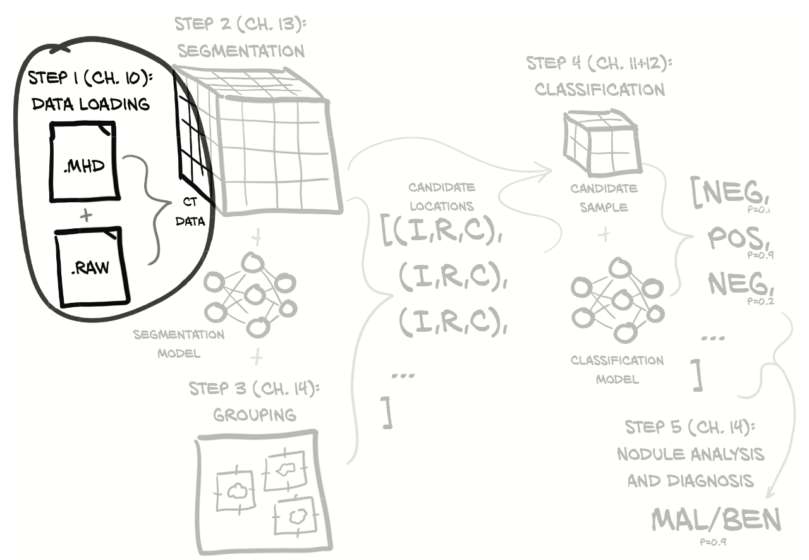
Figure 10.2 shows what we’ll need to do to turn our raw data into a training sample. Luckily, we got a head start on understanding our data in the last chapter, but we have more work to do on that front as well.
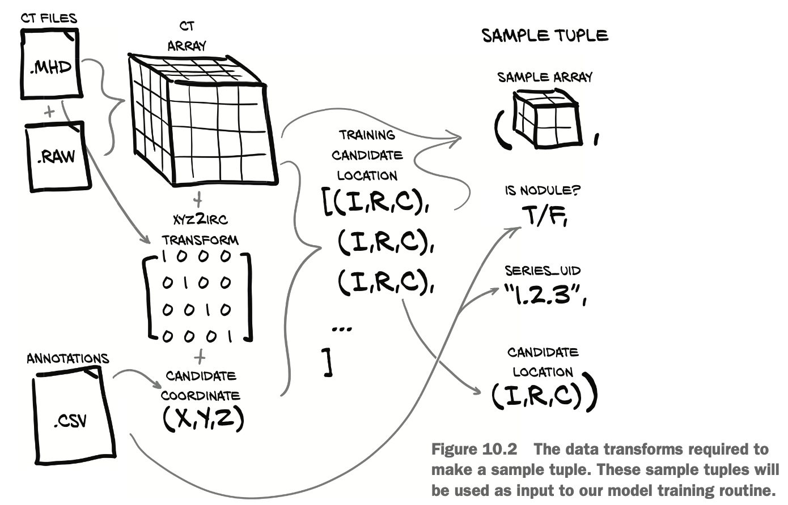
10.1 Raw CT data files
Our CT data comes in two files: a .mhd file containing metadata header information, and a .raw file containing the raw bytes that make up the 3D array. Each file’s name starts with a unique identifier called the series UID (the name comes from the Digital Imaging and Communications in Medicine [DICOM] nomenclature) for the CT scan in question. For example, for series UID 1.2.3, there would be two files: 1.2.3.mhd and 1.2.3.raw.
**Our Ct class will consume those two files and produce the 3D array, as well as the transformation matrix to convert from the patient coordinate system (which we will discuss in more detail in section 10.6) to the index, row, column coordinates needed by the array (these coordinates are shown as (I,R,C) in the figures and are denoted with _irc variable suffixes in the code).** just remember that we’ve got some coordinate system conversion to do before we can apply these coordinates to our CT data. We’ll explore the details as we need them.
We will also load the annotation data provided by LUNA, which will give us a list of nodule coordinates, each with a malignancy flag, along with the series UID of the relevant CT scan. By combining the nodule coordinate with coordinate system transformation information, we get the index, row, and column of the voxel at the center of our nodule.
Using the (I,R,C) coordinates, we can crop a small 3D slice of our CT data to use as the input to our model. Along with this 3D sample array, we must construct the rest of our training sample tuple, which will have the sample array, nodule status flag, series UID, and the index of this sample in the CT list of nodule candidates. This sample tuple is exactly what PyTorch expects from our Dataset subclass and represents the last section of our bridge from our original raw data to the standard structure of PyTorch tensors.
Limiting or cropping our data so as not to drown our model in noise is important, as is making sure we’re not so aggressive that our signal gets cropped out of our input. We want to make sure the range of our data is well behaved, especially after normalization. Clamping our data to remove outliers can be useful, especially if our data is prone to extreme outliers. We can also create handcrafted, algorithmic transformations of our input; this is known as feature engineering.
10.2 Parsing LUNA’s annotation data
The first thing we need to do is begin loading our data. Making sure we know how to work with the raw input is required no matter what, and knowing how our data will look after it loads can help inform the structure of our early experiments. We could try loading individual CT scans, but we think it makes sense to parse the CSV files that LUNA provides, which contain information about the points of interest in each CT scan. As we can see in figure 10.3, we expect to get some coordinate information, an indication of whether the coordinate is a nodule, and a unique identifier for the CT scan. Since there are fewer types of information in the CSV files, and they’re easier to parse, we’re hoping they will give us some clues about what to look for once we start loading CTs.
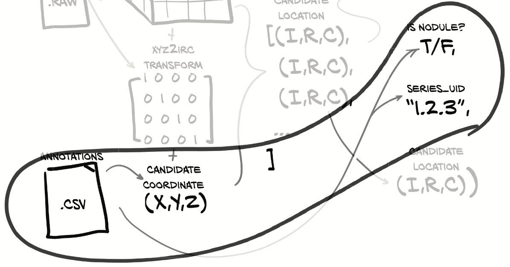
The candidates.csv file contains information about all lumps that potentially look like nodules, whether those lumps are malignant, benign tumors, or something else altogether. We’ll use this as the basis for building a complete list of candidates that can then be split into our training and validation datasets.
1 | # Counts the number of lines in the file |
NOTE The values in the seriesuid column have been elided to better fit the printed page.
So we have 551,000 lines, each with a seriesuid (which we’ll call series_uid in the code), some (X,Y,Z) coordinates, and a class column that corresponds to the nodule status (it’s a Boolean value: 0 for a candidate that is not an actual nodule, and 1 for a candidate that is a nodule, either malignant or benign). We have 1,351 candidates flagged as actual nodules.
The annotations.csv file contains information about some of the candidates that have been flagged as nodules. We are interested in the diameter_mm information in particular:
1 | $ wc -l annotations.csv |
We have size information for about 1,200 nodules. This is useful, since we can use it to make sure our training and validation data includes a representative spread of nodule sizes. Without this, it’s possible that our validation set could end up with only extreme values, making it seem as though our model is underperforming.
10.2.1 Training and validation sets
we’ll split our data into training and validation sets. We want to make sure both sets are representative of the range of real-world input data we’re expecting to see and handle normally. If either set is meaningfully different from our real-world use cases, it’s pretty likely that our model will behave differently than we expect—all of the training and statistics we collect won’t be predictive once we transfer over to production use!
Let’s get back to our nodules. We’re going to sort them by size and take every Nth one for our validation set. That should give us the representative spread we’re looking for. Unfortunately, the location information provided in annotations.csv doesn’t always precisely line up with the coordinates in candidates.csv:
1 | $ grep 100225287222365663678666836860 annotations.csv 1.3.6...6860,-128.6994211,-175.3192718,-298.3875064,5.651470635 1.3.6...6860,103.7836509,-211.9251487,-227.12125,4.224708481 |
If we truncate the corresponding coordinates from each file, we end up with (–128.70, –175.32,–298.39) versus (–128.94,–175.04,–297.87). Since the nodule in question has a diameter of 5 mm, both of these points are clearly meant to be the “center” of the nodule, but they don’t line up exactly. It would be a perfectly valid response to decide that dealing with this data mismatch isn’t worth it, and to ignore the file. We are going to do the legwork to make things line up, though, since real-world datasets are often imperfect this way, and this is a good example of the kind of work you will need to do to assemble data from disparate data sources.
10.2.2 Unifying our annotation and candidate data
Now that we know what our raw data files look like, let’s build a getCandidateInfoList function that will stitch it all together. We’ll use a named tuple that is defined at the top of the file to hold the information for each nodule.
1 | from collections import namedtuple |
These tuples are not our training samples, as they’re missing the chunks of CT data we need. Instead, these represent a sanitized, cleaned, unified interface to the human-annotated data we’re using. It’s very important to isolate having to deal with messy data from model training. Otherwise, your training loop can get cluttered quickly, because you have to keep dealing with special cases and other distractions in the middle of code that should be focused on training.
Our list of candidate information will have the nodule status (what we’re going to be training the model to classify), diameter (useful for getting a good spread in training, since large and small nodules will not have the same features), series (to locate the correct CT scan), and candidate center (to find the candidate in the larger CT). The function that will build a list of these NoduleInfoTuple instances starts by using an inmemory caching decorator, followed by getting the list of files present on disk.
1 |
|
Since parsing some of the data files can be slow, we’ll cache the results of this function call in memory. Speeding up our data pipeline by carefully applying inmemory or on-disk caching can result in some pretty impressive gains in training speed.
we’ll support running our training program with less than the full set of training data, due to the long download times and high disk space requirements. The requireOnDisk_bool parameter is what makes good on that promise; we’re detecting which LUNA series UIDs are actually present and ready to be loaded from disk, and we’ll use that information to limit which entries we use from the CSV files we’re about to parse. Being able to run a subset of our data through the training loop can be useful to verify that the code is working as intended. Often a model’s training results are bad to useless when doing so, but exercising our logging, metrics, model check-pointing, and similar functionality is beneficial.
After we get our candidate information, we want to merge in the diameter information from annotations.csv. First we need to group our annotations by series_uid, as that’s the first key we’ll use to cross-reference each row from the two files.
1 |
|
For each of the candidate entries for a given series_uid, we loop through the annotations we collected earlier for the same series_uid and see if the two coordinates are close enough to consider them the same nodule. If they are, great! Now we have diameter information for that nodule. If we don’t find a match, that’s fine; we’ll just treat the nodule as having a 0.0 diameter. Since we’re only using this information to get a good spread of nodule sizes in our training and validation sets, having incorrect diameter sizes for some nodules shouldn’t be a problem, but we should remember we’re doing this in case our assumption here is wrong.
That’s a lot of somewhat fiddly code just to merge in our nodule diameter. Unfortunately, having to do this kind of manipulation and fuzzy matching can be fairly common, depending on your raw data. Once we get to this point, however, we just need to sort the data and return it.
10.3 Loading individual CT scans
we need to be able to take our CT data from a pile of bits on disk and turn it into a Python object from which we can extract 3D nodule density data. We can see this path from the .mhd and .raw files to Ct objects in figure 10.4. Our nodule annotation information acts like a map to the interesting parts of our raw data. Before we can follow that map to our data of interest, we need to get the data into an addressable form.
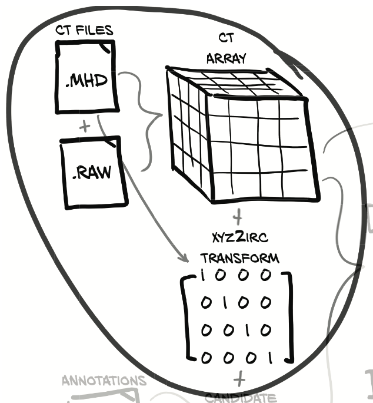
The native file format for CT scans is DICOM (www.dicomstandard.org). The first version of the DICOM standard was authored in 1984, and as we might expect from anything computing-related that comes from that time period, it’s a bit of a mess.
LUNA has converted the data we’re going to be using for this chapter into the MetaIO format, which is quite a bit easier to use (https://itk.org/Wiki/MetaIO/Documentation#Quick_Start). We can treat the format of the data files as a black box and use SimpleITK to load them into more familiar NumPy arrays.
1 | import SimpleITK as sitk |
For real projects, you’ll want to understand what types of information are contained in your raw data, but it’s perfectly fine to rely on third-party code like SimpleITK to parse the bits on disk. Finding the right balance of knowing everything about your inputs versus blindly accepting whatever your data-loading library hands you will prob- ably take some experience. Just remember that we’re mostly concerned about data, not bits. It’s the information that matters, not how it’s represented.
We identify specific CT scans using the series instance UID (series_uid) assigned when the CT scan was created. DICOM makes heavy use of unique identifiers (UIDs) 10.3.1 for individual DICOM files, groups of files, courses of treatment, and so on. These identifiers are similar in concept to UUIDs (https://docs.python.org/3.6/library/ uuid.html), but they have a different creation process and are formatted differently.
For our purposes, we can treat them as opaque ASCII strings that serve as unique keys to reference the various CT scans. Officially, only the characters 0 through 9 and the period (.) are valid characters in a DICOM UID, but some DICOM files in the wild have been anonymized with routines that replace the UIDs with hexadecimal (0–9 and a–f) or other technically out-of-spec values (these out-of-spec values typically aren’t flagged or cleaned by DICOM parsers; as we said before, it’s a bit of a mess).
The 10 subsets we discussed earlier have about 90 CT scans each (888 in total), with every CT scan represented as two files: one with a .mhd extension and one with a .raw extension. The data being split between multiple files is hidden behind the sitk routines, however, and is not something we need to be directly concerned with.
At this point, ct_a is a three-dimensional array. All three dimensions are spatial, and the single intensity channel is implicit.
10.3.1 Hounsfield Units
Without understanding the nuances of our data’s values and range, we’ll end up feeding values into our model that will hinder its ability to learn what we want it to. Continuing the __init__ method, we need to do a bit of cleanup on the ct_a values. CT scan voxels are expressed in Hounsfield units (仿射剂量) (HU; https://en.wikipedia.org/wiki/Hounsfield_scale), which are odd units; air is –1,000 HU (close enough to 0 g/cc [grams per cubic centimeter] for our purposes), water is 0 HU (1 g/cc), and bone is at least +1,000 HU (2–3 g/cc).

Some CT scanners use HU values that correspond to negative densities to indicate that those voxels are outside of the CT scanner’s field of view. For our purposes, everything outside of the patient should be air, so we discard that field-of-view information by setting a lower bound of the values to –1,000 HU. Similarly, the exact densities of bones, metal implants, and so on are not relevant to our use case, so we cap density at roughly 2 g/cc (1,000 HU) even though that’s not biologically accurate in most cases.
1 | ct_array = clip(-1000, 1000, ct_array) |
Values above 0 HU don’t scale perfectly with density, but the tumors we’re interested in are typically around 1 g/cc (0 HU), so we’re going to ignore that HU doesn’t map perfectly to common units like g/cc. That’s fine, since our model will be trained to consume HU directly.
It’s important to know that our data uses the range of –1,000 to +1,000, since in chapter 13 we end up adding channels of information to our samples. If we don’t account for the disparity between HU and our additional data, those new channels can easily be overshadowed by the raw HU values.
10.4 Locating a nodule using the patient coordinate system
Deep learning models typically need fixed-size inputs, due to having a fixed number of input neurons. We need to be able to produce a fixed-size array containing the candidate so that we can use it as input to our classifier. We’d like to train our model using a crop of the CT scan that has a candidate nicely centered, since then our model doesn’t have to learn how to notice nodules tucked away in the corner of the input. By reducing the variation in expected inputs, we make the model’s job easier.
10.4.1 The patient coordinate system
Unfortunately, all of the candidate center data we loaded in section 10.2 is expressed in millimeters, not voxels! We can’t just plug locations in millimeters into an array index and expect everything to work out the way we want.
As we can see in figure 10.5, we need to transform our coordinates from the millimeter-based coordinate system (X,Y,Z) they’re expressed in, to the voxel-address-based coordinate system (I,R,C) used to take array slices from our CT scan data.
when dealing with CT scans, we refer to the array dimensions as index, row, and column, because a separate meaning exists for X, Y, and Z, as illustrated in figure 10.6. The patient coordinate system defines positive X to be patient-left (left), positive Y to be patient-behind (posterior), and positive Z to be toward-patient-head (superior). Left-posterior-superior is sometimes abbreviated LPS.
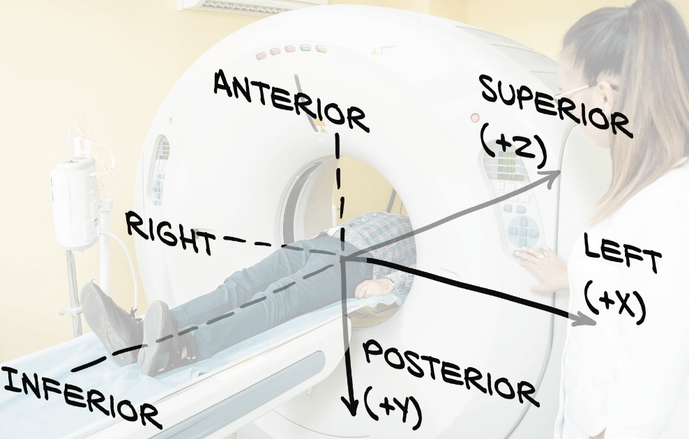
The patient coordinate system is measured in millimeters and has an arbitrarily positioned origin that does not correspond to the origin of the CT voxel array, as shown in figure 10.7.
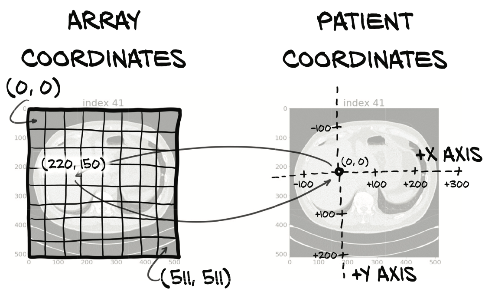
The patient coordinate system is often used to specify the locations of interesting anatomy in a way that is independent of any particular scan. The metadata that defines the relationship between the CT array and the patient coordinate system is stored in the header of DICOM files, and that meta-image format preserves the data in its header as well. This metadata allows us to construct the transformation from (X,Y,Z) to (I,R,C) that we saw in figure 10.5.
10.4.2 CT scan shape and voxel sizes
One of the most common variations between CT scans is the size of the voxels; typically, they are not cubes. Instead, they can be 1.125 mm × 1.125 mm × 2.5 mm or similar. Usually the row and column dimensions have voxel sizes that are the same, and the index dimension has a larger value, but other ratios can exist.
When plotted using square pixels, the non-cubic voxels can end up looking somewhat distorted. That’s an imperfect analogy, since in this case the distortion is uniform and linear—the patient looks far more squat or barrel-chested in figure 10.8 than they would in reality.
Knowing these kinds of details can help when trying to interpret our results visually. Without this information, it would be easy to assume that something was wrong with our data loading: we might think the data looked so squat because we were skipping half of the slices by accident, or something along those lines.
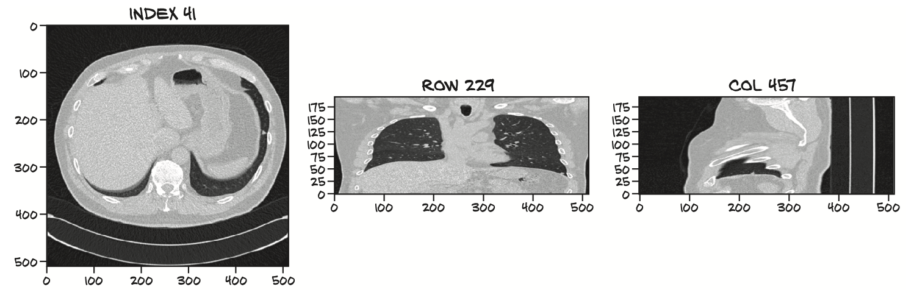
CTs are commonly 512 rows by 512 columns, with the index dimension ranging from around 100 total slices up to perhaps 250 slices (250 slices times 2.5 millimeters is typically enough to contain the anatomical region of interest). This results in a lower bound of approximately \(2^{25}\) voxels, or about 32 million data points. Each CT specifies the voxel size in millimeters as part of the file metadata; for example, we’ll call ct_mhd .GetSpacing() in listing 10.10.
10.4.3 Converting between millimeters and voxel addresses
We will define some utility code to assist with the conversion between patient coordinates in millimeters (which we will denote in the code with an _xyz suffix on variables and the like) and (I,R,C) array coordinates (which we will denote in code with an _irc suffix).
You might wonder whether the SimpleITK library comes with utility functions to convert these. And indeed, an Image instance does feature two methods—TransformIndexToPhysicalPoint and TransformPhysicalPointToIndex—to do just that (except shuffling from CRI [column,row,index] IRC). However, we want to be able to do this computation without keeping the Image object around, so we’ll perform the math manually here.
Flipping the axes (and potentially a rotation or other transforms) is encoded in a 3 × 3 matrix returned as a tuple from ct_mhd.GetDirections(). To go from voxel indices to coordinates, we need to follow these four steps in order:
- Flip the coordinates from IRC to CRI, to align with XYZ.
- Scale the indices with the voxel sizes.
- Matrix-multiply with the directions matrix, using @ in Python.
- Add the offset for the origin.
To go back from XYZ to IRC, we need to perform the inverse of each step in the reverse order. We keep the voxel sizes in named tuples, so we convert these into arrays.
1 | IrcTuple = namedtuple('IrcTuple', ['index', 'row', 'column']) |
The metadata we need to convert from patient coordinates (_xyz) to array coordinates (_irc) is contained in the MetaIO file alongside the CT data itself. We pull the voxel sizing and positioning metadata out of the .mhd file at the same time we get the ct_a.
1 | class Ct: |
These are the inputs we need to pass into our xyz2irc conversion function, in addition to the individual point to covert. With these attributes, our CT object implementation now has all the data needed to convert a candidate center from patient coordinates to array coordinates.
10.4.4 Extracting a nodule from a CT scan
we will extract an area around each candidate and let the model focus on one candidate at a time. Looking for ways to reduce the scope of the problem for our model can help, especially in the early stages of a project when we’re trying to get our first working implementation up and running.
The getRawNodule function takes the center expressed in the patient coordinate sys- tem (X,Y,Z), just as it’s specified in the LUNA CSV data, as well as a width in voxels. It returns a cubic chunk of CT, as well as the center of the candidate converted to array coordinates.
1 | def getRawCandidate(self, center_xyz, width_irc): |
10.5 A straightforward dataset implementation
By subclassing Dataset, we will take our arbitrary data and plug it into the rest of the PyTorch ecosystem. Each Ct instance represents hundreds of different samples that we can use to train our model or validate its effectiveness. Our LunaDataset class will normalize those samples, flattening each CT’s nodules into a single collection from which samples can be retrieved without regard for which Ct instance the sample originates from. This flattening is often how we want to process data, although as we’ll see in chapter 12, in some situations a simple flattening of the data isn’t enough to train a model well.
In terms of implementation, we are going to start with the requirements imposed from subclassing Dataset and work backward. This is different from the datasets we’ve worked with earlier; there we were using classes provided by external libraries, whereas here we need to implement and instantiate the class ourselves. Once we have done so, we can use it similarly to those earlier examples.
any Dataset subclasses we want to implement must provide these two functions:
- An implementation of
__len__that must return a single, constant value after initialization (the value ends up being cached in some use cases)- The
__getitem__method, which takes an index and returns a tuple with sample data to be used for training (or validation, as the case may be)
1 | def __getitem__(self, ndx): |
This has two elements, one each for our possible candidate classes (nodule or nonnodule; or positive or negative, respectively). We could have a single output for the nodule status, but nn.CrossEntropyLoss expects one output value per class, so that’s what we provide here. The exact details of the tensors you construct will change based on the type of project you’re working on.
Let’s take a look at our final sample tuple (the larger nodule_t output isn’t partic- ularly readable, so we elide most of it in the listing).
1 | (tensor([[[[-899., -903., -825., ..., -901., -898., -893.], |
10.5.1 Caching candidate arrays with the getCtRawCandidate function
In order to get decent performance out of LunaDataset, we’ll need to invest in some on-disk caching. This will allow us to avoid having to read an entire CT scan from disk for every sample. Doing so would be prohibitively slow! Make sure you’re paying attention to bottlenecks in your project and doing what you can to optimize them once they start slowing you down. Without caching, the LunaDataset is easily 50 times slower! We’ll revisit this in the chapter’s exercises.
The function itself is easy. It’s a file-cache-backed (https://pypi.python.org/pypi/ diskcache) wrapper around the Ct.getRawCandidate method we saw earlier.
1 |
|
- First, we’re caching the getCt return value in memory so that we can repeatedly ask for the same Ct instance without having to reload all of the data from disk.
- The getCtRawCandidate function that calls getCt also has its outputs cached, however; so after our cache is populated, getCt won’t ever be called. These values are cached to disk using the Python library diskcache. it’s much, much faster to read in 215 float32 values from disk than it is to read in 225 int16 values, convert to float32, and then select a 215 subset.
If the definitions of these functions ever materially change, we will need to remove the cached values from disk. If we don’t, the cache will continue to return them, even if now the function will not map the given inputs to the old output. The data is stored in the
luna/cachedirectory.
10.5.2 *Constructing our dataset in LunaDataset.__init__*
Just about every project will need to separate samples into a training set and a validation set. We are going to do that here by designating every tenth sample, specified by the val_stride parameter, as a member of the validation set. We will also accept an isValSet_bool parameter and use it to determine whether we should keep only the training data, the validation data, or everything.
1 | class LunaDataset(Dataset): |
If we pass in a truthy series_uid, then the instance will only have nodules from that series. This can be useful for visualization or debugging, by making it easier to look at, for instance, a single problematic CT scan.
10.5.3 A training/validation split
We allow for the Dataset to partition out 1/N th of the data into a subset used for validating the model. How we will handle that subset is based on the value of the isValSet _bool argument.
1 | if isValSet_bool: |
Deletes the validation images (every val_stride-th item in the list) from self.candidateInfo_list. We made a copy earlier so that we don’t alter the original list.
This means we can create two Dataset instances and be confident that there is strict segregation between our training data and our validation data.
1 | candidateInfo_list = getCandidateInfoList(requireOnDist_bool=False) |
We have a few very large candidates, starting at 32 mm, but they rapidly drop off to half that size. The bulk of the candidates are in the 4 to 10 mm range, and several hundred don’t have size information at all. we had more actual nodules than we had diameter annotations.
The larger takeaway is that our training and validation splits should have a few properties in order to work well:
- Both sets should include examples of all variations of expected inputs.
- Neither set should have samples that aren’t representative of expected inputs unless they have a specific purpose like training the model to be robust to outliers.
- The training set shouldn’t offer unfair hints about the validation set that wouldn’t be true for real-world data (for example, including the same sample in both sets; this is known as a leak in the training set).
10.5.4 Rendering the data
1 | def showCandidate(series_uid, dataset_ndx=None, **kwargs): |
This produces images akin to those showing CT and nodule slices earlier in this chapter.
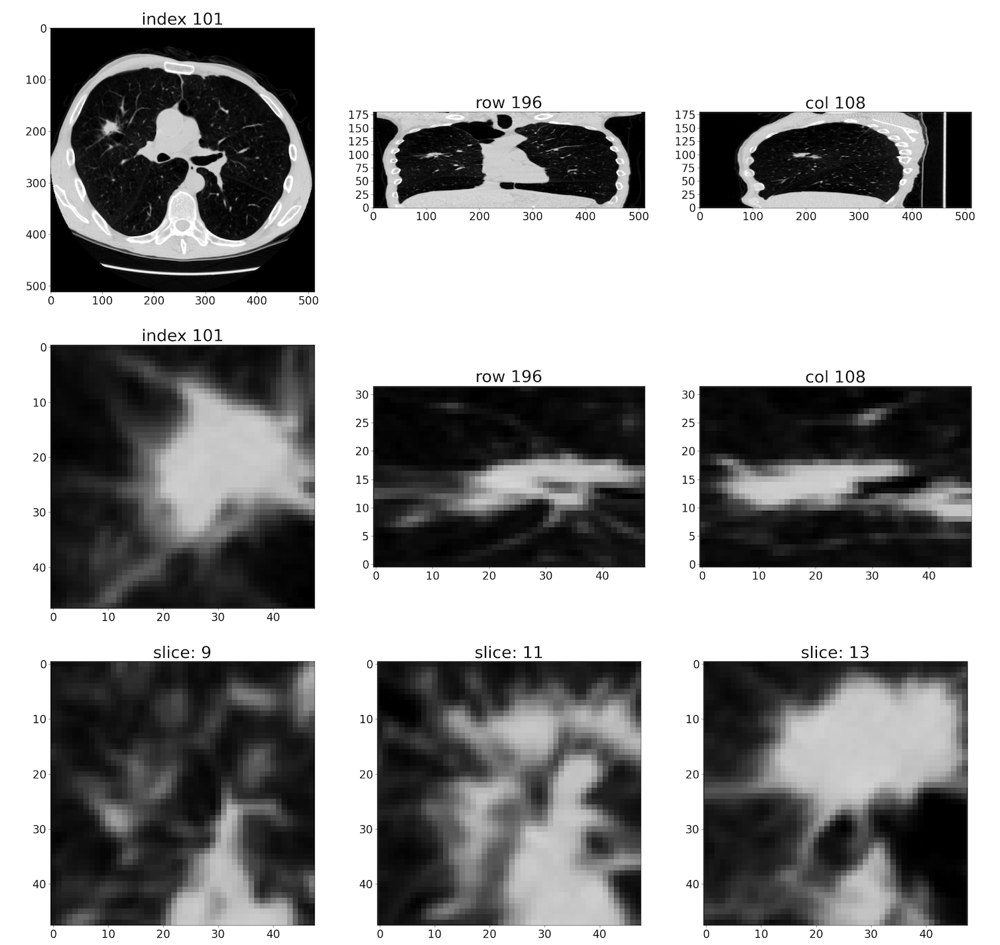
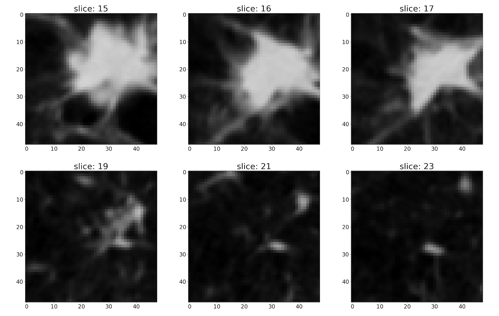
10.6 Conclution
In this chapter, we got PyTorch’s head wrapped around our data! By transforming our DICOM-via-meta-image raw data into tensors, we’ve set the stage to start implementing a model and a training loop, which we’ll see in the next chapter.